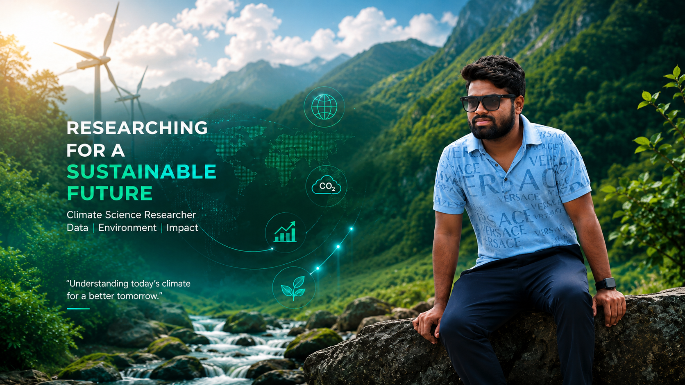

Working at the intersection of numerical weather prediction, high-resolution climate modeling, and HPC-based atmospheric simulations. Research focus on monsoon dynamics, extreme rainfall diagnostics, and Arctic–Indian climate teleconnections.

I am an atmospheric and climate scientist currently working as a Project Engineer at Centre for Development of Advanced Computing (C-DAC), Pune, where I focus on operational WRF-based numerical weather prediction and high-resolution climate analysis.
My academic journey includes an M.Tech in Atmospheric Sciences jointly from Savitribai Phule Pune University (SPPU) and the Indian Institute of Tropical Meteorology (IITM), where my thesis investigated the influence of the Arctic Oscillation on Indian Summer Monsoon Rainfall.
I have hands-on experience with ERA5 and IMD datasets, extreme rainfall diagnostics, urban climate risk assessment, and large-scale HPC computing on clusters like Param Smriti. I am passionate about bridging computational science with real-world climate challenges.
Beyond science, I am a government scholarship awardee, marathon runner, and musician — bringing discipline and creativity to everything I pursue.
Investigating drivers of Indian Summer Monsoon Rainfall including Arctic Oscillation influence, MMCSv2 seasonal prediction model analysis, and large-scale climate pattern connections.
Operational WRF-based NWP modeling, heat wave visualization within the boundary layer, extreme rainfall diagnostics and urban climate risk assessment using ERA5 and IMD datasets.
CFD-based hydrodynamic investigations of bio-inspired flapping foil propulsion, oscillating foil dynamics, lift and thrust generation, and experimental validation of marine propulsion systems.
Large climate dataset processing using Dask parallel computing, Parallel NetCDF, HPC cluster workflows on Param Smriti, and multiprocessing pipelines for atmospheric simulations.
Urban climate risk assessment integrating meteorological and socio-economic indicators, extreme rainfall event diagnostics, and boundary layer flow analysis over urban environments.
Application of GIS and remote sensing techniques in atmospheric and oceanographic research, climate data visualization using Panoply, Ncview, Ferret, and CDO tools.
Adarsh Raut, Maurya P., Muchhala D. · ICSEE 2025
CFD simulation of oscillating airfoil dynamics · Lift and thrust generation under varying pitching frequencies · Experimental validation with strong CFD correlation
📚 Also find my work on ORCID · 0009-0001-6554-4709
Numerical investigation of thrust and lift generation from pitching foils. CFD simulation and comparison with experimental data. Analysis of frequency and pitching-angle effects on hydrodynamic performance.
M.Tech thesis research investigating teleconnections between Arctic Oscillation patterns and Indian Summer Monsoon Rainfall variability using large-scale climate datasets.
High-resolution climate analysis using ERA5 and IMD datasets. Extreme rainfall diagnostics and urban climate risk assessment integrating meteorological and socio-economic indicators.
Processed WRF model output to identify and visualize heat wave propagation patterns over central India, focusing on boundary layer dynamics and thermal structure.
Operational WRF-based numerical weather prediction and high-resolution climate analysis using ERA5 and IMD datasets. Extreme rainfall diagnostics and urban climate risk assessment.
Monsoon rainfall drivers and connections, MMCSv2 model data for seasonal prediction, large climate data handling and analysis.
CFD hydrodynamic investigations of oscillating/flapping foil propulsion systems. Numerical and experimental studies of foil hydrodynamics and bio-inspired marine propulsion.
Thesis: Arctic Oscillation Influence on Indian Summer Monsoon Rainfall. Conducted large-scale atmospheric data analysis and climate teleconnection research.
CFD and CAD modeling for industrial applications.
Open to research collaborations, academic discussions, and opportunities in atmospheric science, climate modeling, and HPC applications.
Full academic and professional curriculum vitae including publications, projects, and certifications.
⬇ View Full CV